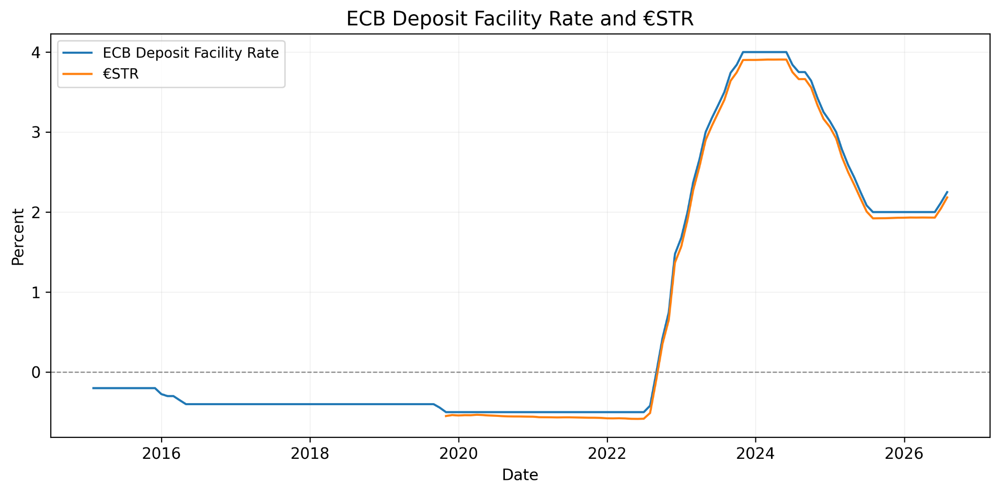

MONETARY POLICY
Euro Area Monetary & Financial Conditions
A reproducible empirical analysis of how ECB policy rates relate to money market rates, bank borrowing conditions and inflation in the euro area.
PythonPandasSQLECBEurostat
139monthly observations
0.80corporate lag 0 correlation
2015 to 2026sample period